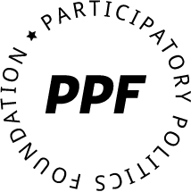
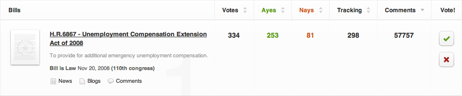
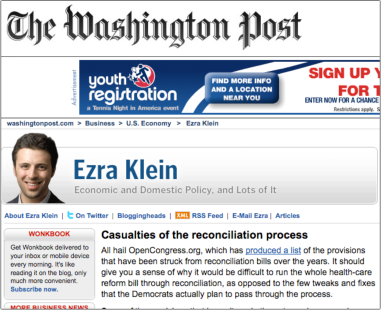

Support Our Public-Mission Work
The Participatory Politics Foundation is a 501©3 non-profit organization with a mission to increase civic engagement. We believe that the Web has created an unprecedented opportunity for individuals to educate themselves in public affairs and take political actions. The results will include a more deliberative democracy and stronger, healthier communities.
Since 2007, our free & open-source software and Web sites have made government more transparent and accountable:
- A key piece of #opengov infrastructure, with up to 1 million visits and 2.75 million page views per month
- Nearly 200,000 users and millions of data requests per week to track and share information about bills, issues, and members of Congress.
- By user engagement, SEO, and traffic metrics, the most successful & visible #opengov product in the past five years.
- Beta version contains official info for six U.S. state legislatures, seek to roll out to all 50 states by the Nov. 2012 federal elections
- Much-needed piece of local #opengov infrastructure for journalists, political bloggers, community organizers, issue-based advocacy groups
- Designed to scale easily, creating customizable versions of OpenCongress for governments in cities, locally, even internationally.
- From our sibling non-profit, Miro is one of the largest open-source software projects in the world, with approx. 2 million monthly users
- Supported by Mozilla, the Knight Foundation, Open Society Institute, Wikimedia Fdn. Ashoka, and hundreds of volunteers & video publishers
- PCF’s Universal Subtitles & other projects open up media partnerships and others for PPF’s data, engagement tools & explanatory content.
Fundraising Mission Statement - We have a good start, with ambitious plans...
PPF’s goal is to expand and create mass-market tools that integrate meaningful political participation into daily activities. Together, we can promote a more “participatory politics” -- not only open data & government transparency websites, but also ambitious, never-before-seen, user-focused organizing tools for millions of people worldwide.
PPF’s vision is to build popular technology for the entire civic experience. Open standards (e.g., Open311) can make political actions & personal opinions portable as part of your online identity. This is the potential of free software on the open Web: robust democracy, increased faith in government, better public policy outcomes, and healthier communities.
Our short- and medium-term needs include the following, as we work towards our non-profit sustainability plan ::
“Everyone can be an insider”
- Maintain our massive database of open government data & enhance our open API and free widget offerings, all free in the public commons.
- Enhance our just-launched version 3 features: Contact-Congress, including campaign contribution data in our custom Message Builder; and MyOC Groups, for grassroots organizing around bills and issues.
- Looking ahead, turn OC into a powerful two-way platform for constituent communication with their members of Congress and a forum for deliberative democracy & participatory budgeting.
- Roll out to remaining 46 U.S. states by Nov. 2012 elections, incorporating the new version 3 features from OC: Contact-Government and MyOG Groups for the first time at the state level.
- Bring OG down to the city & local levels by incorporating open municipal government data, first as a pilot project and then more widely
- Expand OG internationally in partnership with #opengov advocates in other countries, as well as transparency for international institutions.
“Finally, a version of OpenCongress for state legislatures.”
Next:open standards & mass-market Web tools for the entire civic experience
- Open standards for deliberative democracy - collaborative ranking of policy options in public forums that are semantic & p2p, w/ widely-accessible design
- Constituent communication -- continual, responsive feedback loops with government officials & legislators about issues & priorities in your communities
- Fighting systemic corruption -- real-time campaign donation tracking & lobbying disclosure for effective, preemptive oversight & bill text version control
- Participatory budgeting - bringing the above together, ways for citizens to vote for optimized resource allocation & open earmarks across federal, state & local budgets, with input from experts & data-driven public accountability.
New PPF Project Sketches (medium-term) - in more detail, feedback welcome
- (PPF + PCF) collaboration: revamped AdTracker for 2012, an open platform for tracking campaign videos built on Miro Community and incorporating information, context, and public opinion from OpenCongress (federal races) & OpenGovernment (state & city elections). Proposed video hub will meet public demand for authoritative facts & campaign donation data.
-
State, city, and local dashboards of constituent opinion - currently, hyper-local portals like EveryBlock don’t offer a digestible overview of what political issues constituents care about and specific bills or community issues on which they’re communicating with officials. From users who opt-in to register with their address, OpenCongress can display civic actions at the level of states, cities (5-digit zip codes), down to city blocks (zip plus-four). It’s a new view towards deliberative democracy.
-
Money-in-politics message-builder for Rootstrikers & other reformers - new features will make it easier than ever to enforce public accountability “with teeth”. Users can alert elected officials that they’re tracking campaign contributions, down to specific donations from businesses & lobbyists, then organizing other constituents around the bills & issues they support.
-
Additional project areas include campaigns around the following: range voting, net neutrality, non-partisan re-districting, comprehensive electoral reform, universal voter registration, revoking corporate personhood, and encouraging independent political parties for more parliamentary & substantively representative democracy.
Help us grow and build amazing new tools for deliberative democracy. Our team has a strong reputation record of building truly popular products, but our limiting factor is a lack of major funding support for open-source non-profit software & Web apps. With additional tax-exempt donations to our non-profit organization for open-source Web development time, we can create popular technology that delivers the wide-ranging benefits of a strong democracy.
Call us anytime to chat in more detail over the phone or Skype or brief webinar, we’re easy to reach & eager to chat.
-- PPF Founders & Board of Directors, from left to right: Tiffiniy Cheng, Nicholas Reville, Holmes Wilson & David Moore, on behalf of the entire PPF team, partner organizations, allied non-profits & open-source volunteer community. We’re naturally collaborative & partnership-friendly. David is based in New York, NY, w/ other PPF staff around the country.
“I have been hankering for this resource for some time now! I received this e-mail from our executive director at Families and Friends of Louisiana’s Incarcerated Children. I often used OpenCongress working with organizations in DC and thought, how can we get local coverage & if it was even possible. This is truly great work and we will be excited to use it this session when we are hoping to see some reforms pass.”
Sarah Dunnagan, Communication & Development Coordinator, Friends & Family of Louisiana’s Incarcerated Children (FFLIC).
Background: with OpenCongress, we took webpages such as the one at right, for the major health-care reform bill on THOMAS.loc.gov :
- No permalinks to bill pages at the time
- No RSS feeds of bill actions at the time
- No social sharing tools at the time
- No standardized data, no bulk access
- No user-focused search functionality
- User-unfriendly, unappealing Web design
… and turned it into webpages like this at left, re-designing the information display, adding useful data sources & public engagement tools:
- Welcoming look & feel for user experience
- Permalinks & commenting on bill text sections
- RSS feeds & tracking features via “MyOC”
- Built-in social sharing tools
- Remixable open-source code & open standards
- Money-in-politics info on bills, where avail.
- OC Summaries & issue group analysis of bills
- Wiki summary spaces & vote visualizations
- Responsive search functionality
- Personal voting “aye / nay” on bills
- Public comment forums - (very popular feature)
- One-click buttons to contact your elected officials and see what other constituents say
Engagement case study: health care reform debate (April 2010 blog post): from July 2009 through March 2010, over 2,021,575 people visited OC pages for the four bills that came together to form the final law. 1,128,570 of them clicked through to read the official bill text and approx. 169,000 clicked to contact their senators or representative from pages.
Engagement case study: unemployment benefits (March 2008 , Sept. 2009, ongoing blog coverage) - over the past three Congresses, the eight major bills on unemployment insurance gathered close to 175,000 total user comments. Major bills received 75,000 pageviews in the days before consideration, making UI benefits the top issue on the site:

As with OpenCongress, the status quo with state legislative websites is a mess of unstandardized, un-user-friendly pages, such as this Louisiana bill page:
Previously, state government websites offered virtually no standardized data and no context for visitors as to a bill’s context or substance.
… turned into the sample bill page at left on OpenGovernment, with user-focused design and the same one-click engagement tools as featured on OpenCongress. OpenGovernment is the first open-source & non-profit website to bring together official information, campaign contribution data, social wisdom through news & blog coverage, and public comments.
The site’s main categories of information are bills, votes (with full roll call visualizations), legislators (both upper & lower chambers), committees, issue areas, businesses and individual donors from FollowTheMoney & MAPLight.org. Additional context is provided by special interest group analysis, videos (using the open-source Miro Community platform), community wiki project and “key vote” summaries from Project VoteSmart.
Selected PPF Press Mentions (many more)
Congress Tracking Made Easy and Fun (
ReadWriteWeb)
The Health Care Debate: How to Get the Facts Yourself (
BlogHer)
eGov Watch: OpenCongress.org (
O’Reilly Broadcast)
Think Past the Internet ATM (
PC World)
OpenGovernment connects state gov’t to citizens (
O’Reilly Radar)
OpenCongress bill pages are routinely linked by NYTImes.com Topics pages, WashingtonPost.com blogs, PBS Online, the Independent Network, TalkingPointsMemo.com, RaceTracker on DailyKos, HotAir.com, HuffingtonPost, and hundreds more political blogs -- including a variety of Media Consortium partners & allies like FixCongressFirst. (Pictured right: Ezra Klein, Policy blogger, WashingtonPost.com: “All hail OpenCongress.org…”)
